Fashion Timeline: Key Moments in American Style
Explore pivotal moments in American fashion history through this visual journey from the 1900s to today. Each image captures an iconic style, trend, or fashion revolution that shaped our cultural landscape.
1900s
1903: The Gibson Girl
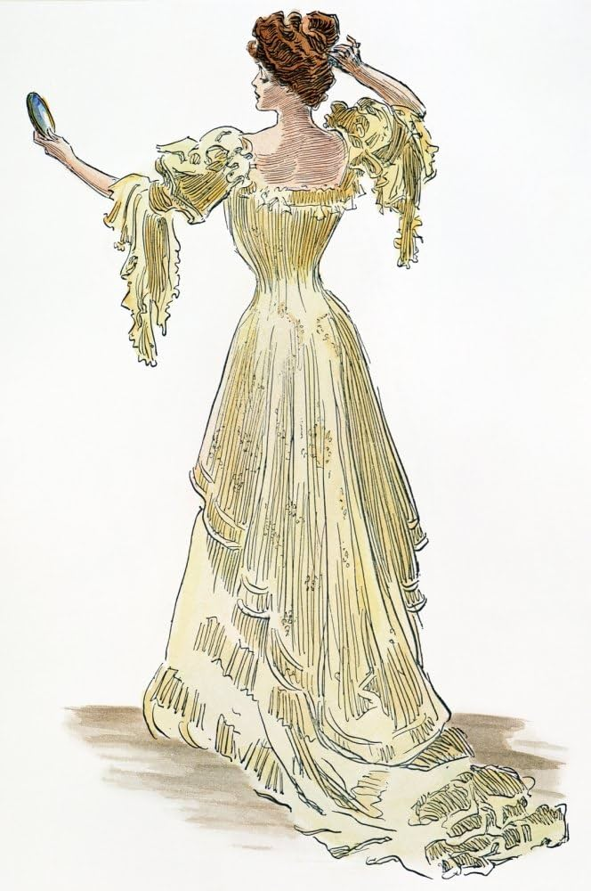
Charles Dana Gibson's illustrations created America's first beauty standard, featuring a tall, athletic woman with an S-curve silhouette, upswept hair, and a poised demeanor.
1910s
1914: War Changes Fashion
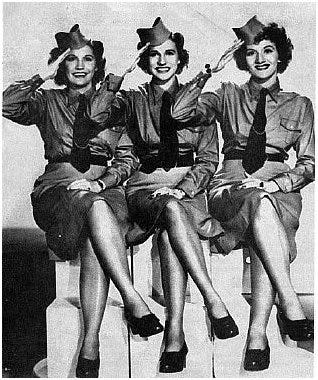
World War I transformed women's fashion as they entered the workforce. Hemlines rose, silhouettes became more practical, and military details influenced civilian clothing.
1920s
1925: The Flapper Revolution
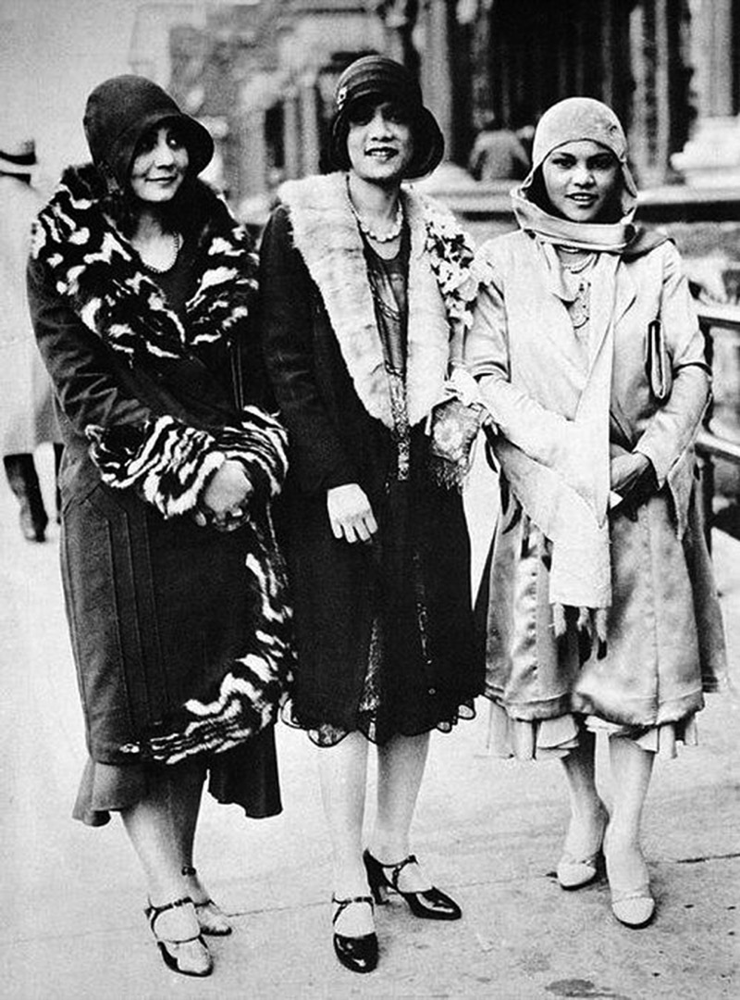
The flapper embodied the Roaring Twenties with her bobbed hair, knee-length dresses, and rebellious spirit. This look symbolized women's newfound freedom after gaining the right to vote.
1930s
1932: Depression Era Elegance
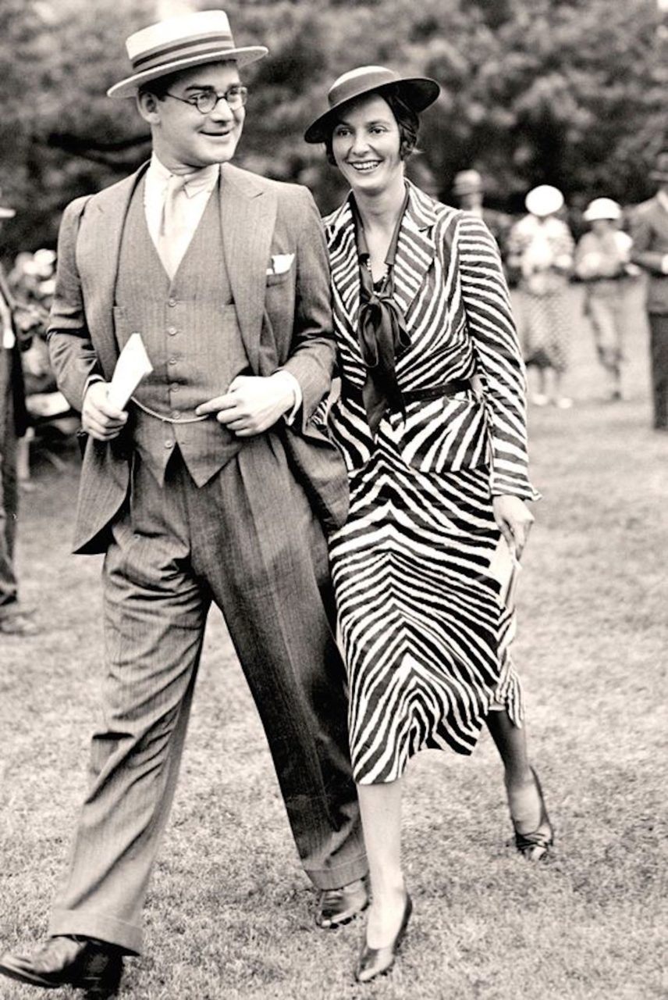
Despite economic hardship, Hollywood glamour provided escapism. Madeleine Vionnet's bias-cut gowns created elegant, body-skimming silhouettes that defined 1930s sophistication.
1940s
1943: Utility Clothing
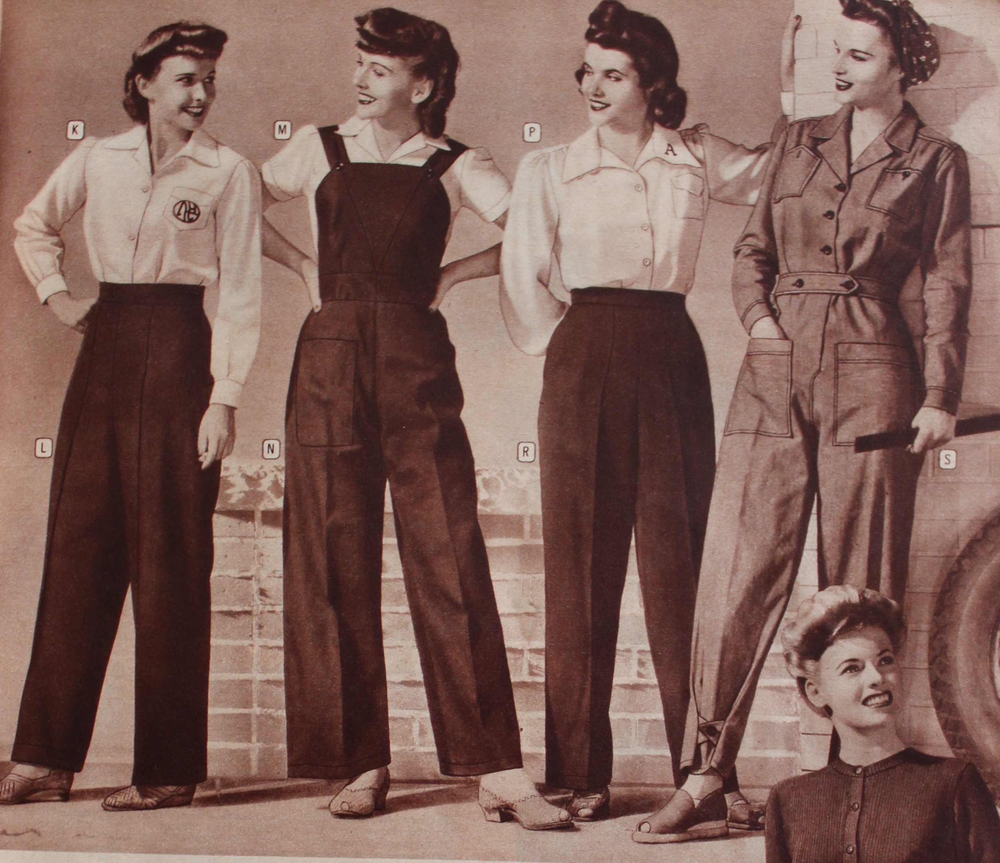
"Rosie the Riveter" became an icon as women adopted practical workwear. Fabric rationing led to shorter skirts, narrower silhouettes, and the popularization of trousers for women.
1950s
1955: The New Look
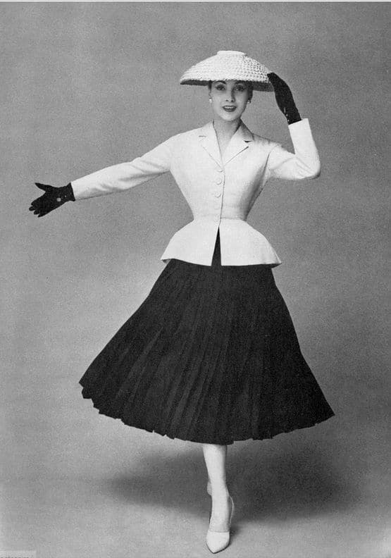
Christian Dior's "New Look" dominated American fashion with its nipped waists, full skirts, and ultra-feminine silhouette, reflecting post-war prosperity and a return to traditional gender roles.
1960s
1967: Summer of Love
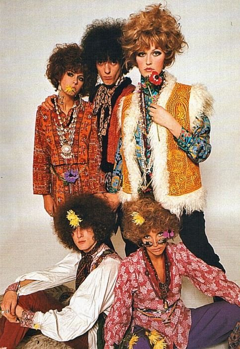
The counterculture movement embraced psychedelic prints, tie-dye, fringe, and ethnic-inspired designs. Fashion became a political statement against the Vietnam War and consumer culture.
1970s
1977: Disco Fashion
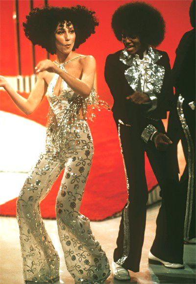
Disco dominated nightlife and fashion with platform shoes, bell-bottoms, and shimmering fabrics. Studio 54 became the epicenter of glamorous excess, while John Travolta's white suit in "Saturday Night Fever" defined an era.
1980s
1983: Power Dressing
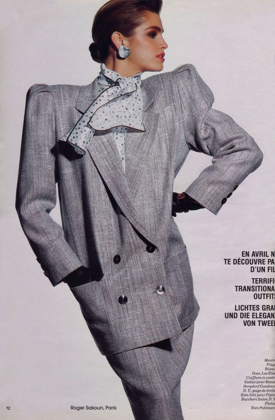
As women entered corporate America in unprecedented numbers, power suits with exaggerated shoulder pads symbolized female ambition. Designers like Donna Karan and Ralph Lauren defined the look of the career woman.
1985: MTV Fashion
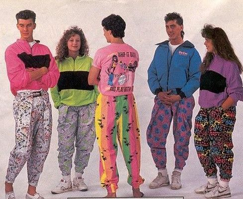
MTV revolutionized fashion as music videos became style showcases. Madonna's "Like a Virgin" look with lace gloves, crucifixes, and visible lingerie influenced a generation, while Michael Jackson's red "Thriller" jacket became iconic.
1990s
1992: Grunge Revolution
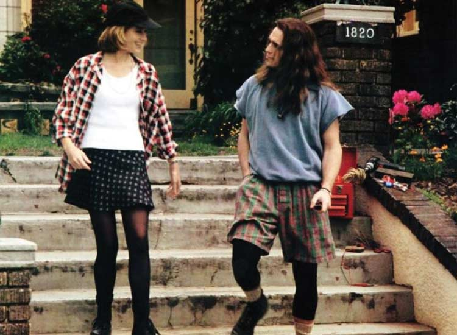
Seattle's music scene spawned grunge fashion, with flannel shirts, ripped jeans, and Doc Martens boots representing youth rebellion against the excesses of the 1980s. Marc Jacobs' controversial grunge collection for Perry Ellis brought the look to high fashion.
1995: Minimalism
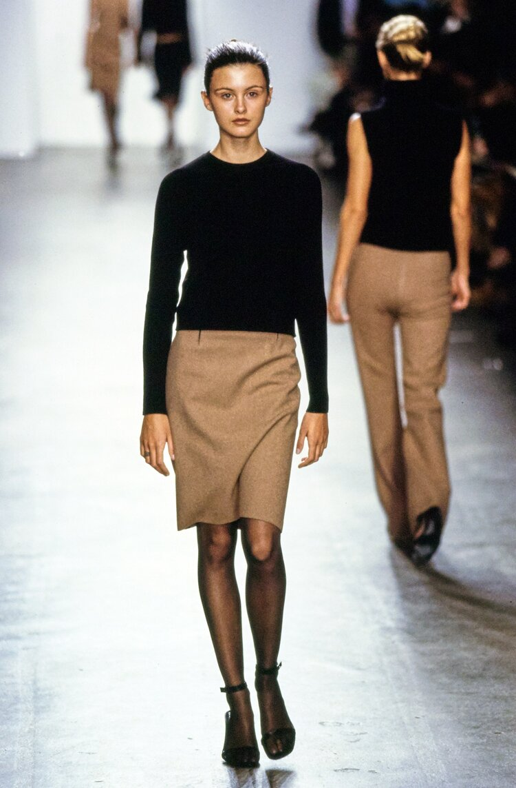
As a reaction to 80s excess, minimalism dominated mid-90s fashion. Calvin Klein, Jil Sander, and Helmut Lang championed clean lines, neutral colors, and understated luxury. The "heroin chic" aesthetic emerged with Kate Moss as its poster child.
2000s
2001: Y2K Fashion
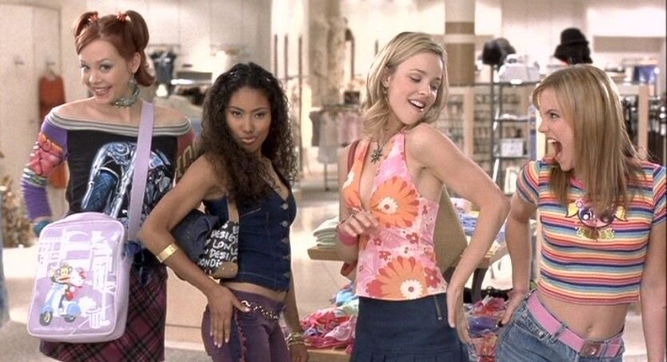
The new millennium brought futuristic fashion with metallic fabrics, low-rise jeans, and belly-baring tops. Juicy Couture velour tracksuits became a status symbol, while celebrities like Britney Spears and Paris Hilton defined the era's style.
2008: Michelle Obama's Fashion Influence
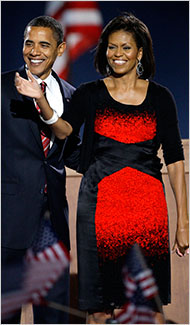
First Lady Michelle Obama revolutionized political fashion by championing American designers and mixing high-end pieces with accessible brands like J.Crew. Her Jason Wu inaugural gown marked a new era of fashion diplomacy.
2010s
2014: Athleisure Takes Over
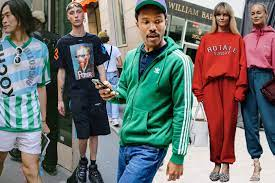
Athletic wear moved beyond the gym as "athleisure" became acceptable everyday attire. Brands like Lululemon and Nike became fashion statements, while celebrities like Beyoncé launched activewear lines, blurring the line between workout clothes and casual fashion.
2016: Gender-Fluid Fashion
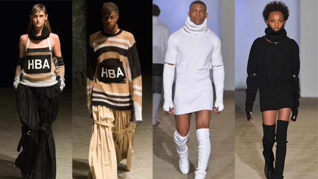
Traditional gender boundaries in fashion began to dissolve as designers like Alessandro Michele at Gucci championed gender-fluid designs. Celebrities like Jaden Smith and Billy Porter challenged norms by wearing skirts and dresses on red carpets.
2020s
2020: Pandemic Fashion
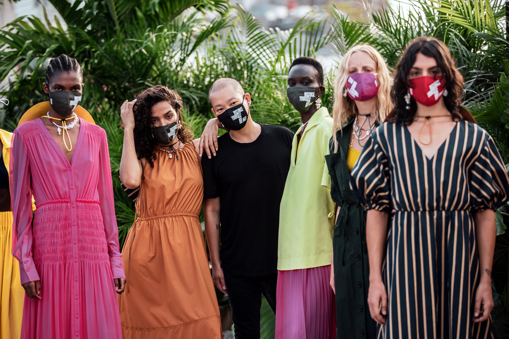
COVID-19 transformed fashion as lockdowns made comfort paramount. Loungewear sales soared, while face masks became essential fashion accessories. The "waist-up" dressing trend emerged for video calls, focusing on statement tops and jewelry.
2023: Sustainable Fashion Movement
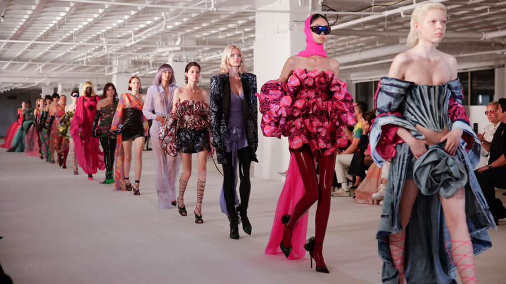
Environmental concerns pushed sustainability to the forefront of fashion. Brands committed to reducing waste and carbon footprints, while secondhand shopping through platforms like Depop and ThredUp became mainstream, challenging fast fashion's dominance.